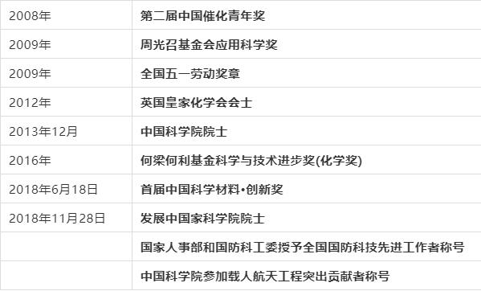

陈树藩（1885年—1949年11月2日），字柏森，陕西安康人。民国皖系军阀，曾任陕西督军。 1905年入陕西陆军小学，第二年被保送保定陆军速成学堂，读炮科。1910年毕业返陕，被分配到陕西陆军第三十九混成协炮兵营当排长，不久调任军械官。1911年10月22日参加西安起义。民国成立后，任独立混成第四旅旅长。1949年11月2日，在杭州病逝。陈树藩字柏森（柏生），陕西安康人，大清光绪十一年（公元1885年）年生于一个贩绸商人家庭。父亲陈声德，四十岁出头才得他这根独苗，从小教他练习儒家经典，望他考取科举，踏上仕途。陈树藩十八岁时，光绪下诏废科举，陈声德的愿望落空。 1905年，陕西成立陆军小学，陈声德遂将陈树藩送到该校学习。 第二年，北京陆军部成立保定陆军速成学堂，陕西陆军小学决定保送三十名优材生前往深造，陈树藩也得到保送，与同学经张钫等，进入保定陆军速成学堂炮科。 1910年，陈树藩毕业返陕西，被分配到陕西陆军混成协炮兵营当排长，不久又调任军械官。
廖乾五（1886年2月18日-1930年9月3日），原名正元，又名华龙，化名刘省三，陕西省安康市平利县八仙镇龙门人。 早年曾参加反对袁世凯复辟帝制和反对以段祺瑞为首的北洋政府的斗争。1922年在武汉加入中国共产党，是中国共产党早期优秀的政治、军事干部。历任中共汉口地委委员，“建国陆海军大元帅府铁甲车队”党代表，国民革命军第4军政治部主任、党代表，革命委员会宣传委员会委员，总政治部秘书长，20军党代表，中共湖南省军委书记。 廖乾五为建立巩固广东革命根据地，为北伐战争和南昌起义的胜利做出了重大贡献，是我国无产阶级革命家、军事家，中国共产党早期优秀党员，人民军队创建初期的高级政治工作干部。
杨弃（1918～1975）别名泳周。汉阴县人。其祖父为清末秀才，家中薄有田产，杨弃15岁时考入省立七中（安康中学），在此期间接触到了《大众哲学》、《宇宙风》、《读书生活》等进步书刊，思想逐渐倾向进步。高中时期，时值“七七事变”暴发，杨弃遂萌发投笔从戎，参军抗战的念头，并将这种念头付诸行动，可惜的是由于种种原因都未成功。一次是报考武汉航校，一次是去抗大学习。在去抗大学习的行动失败后，杨弃只得回到安康中学，后经王任青（共产党员）、肖依袋介绍加入抗日民族先锋队。1938年7月，经同学胡介民介绍，到了集贤庄八路军办事处，在办事处安排下，于当月到达延安，进入抗大学习，加入中国共产党。1940年3月，到八路军一一五师三四四旅六八九团九连当文化教员。半年后任副指导员、指导员。1944年8月，调到二支队六团任营教导员。 抗战胜利后，杨弃升任六师十六团政治处主任、政治委员，随部队到达东北。参加了四平和临江保卫战。东北解放后，参加了渡江战役、衡保战役。抗美援朝期间，先后担任中国人民志愿军师政治部主任、师政委，参加了一、二、三、四次战役，两次身负重伤，坚持带伤战斗。回国后，历任中国人民解放军三十九军政治部主任、旅大警备区政治部副主任、辽宁省军区政委、中共辽宁省委常委、省革命委员会副主任。1964年2月，授少将军衔，1975年病逝于沈阳。
前不久，在全国第十一届残疾人运动会暨第八届特殊奥林匹克运动会皮划艇（静水）项目比赛中， 石泉姑娘夏江波分别获得女子500米单人划艇vL1和女子200米单人划艇vL1银牌。 赛场不同，同样光彩夺目，这位已经退出体坛的残奥会游泳冠军为何会重返赛场，而且参加的还是 皮划艇（静水）项目？面对新的挑战，这位爱笑的女孩如何迎战？近日，959《体育强先说》专访了从残运会比赛现场归来的夏江波。 夏江波在接受采访时表示，其实自己是有机会冲击金牌的，两个银牌也很满意，给自己打99分。做准备活动的时候状态特别好，当天天气比较冷，等待时间长，比赛出发的时候手已经冻僵了，不过没有影响到比赛的发挥。说起退役再复出，32岁的夏江波感慨万千，她说，去年接到邀请参加皮划艇项目比赛的通知时，她是有过纠结的，十二年的游泳训练十分艰苦，给自己带来不少病痛，之前退役就是因为有运动伤病和鼻炎，但今年在陕西家门口举办残运会，又想到多年来国家和陕西对自己精心培养。投之以桃报之以李，正是陕西需要自己的时候，所以必须得去，还要尽自己的最大努力为陕西争得荣誉。
1978年，15岁的张涛考入了汉中师范学院化学专业 ； 1982年，本科毕业; 1989年，张涛从中国科学院大连化学物理研究所毕业，获得博士学位。之后前往英国伯明翰大学做访问学者； 1990年，张涛回国后，进入中国科学院大连化学物理研究所工作，历任研究组副组长、组长、室主任、副所长等职务； 1995年，张涛被聘为中国科学院大连化学物理研究所研究员; 1997年，张涛被聘为中国科学院大连化学物理研究所博士生导师; 2003年，张涛获得国家杰出青年科学基金资助; 2003年3月至2009年10月，张涛担任中国科学院大连化学物理研究所党委书记; 2007年2月至2017年3月，张涛担任中国科学院大连化学物理研究所所长; 2010年2月，张涛所率领的团队获得中国科学院杰出科技成就奖; 2012年10月，张涛当选英国皇家化学会会士 ; 2013年12月，张涛增选为中国科学院院士 ;2014年4月，张涛入选万人计划第一批科技创新领军人才 ; 2016年10月21日，张涛获得何梁何利基金科学与技术进步奖。12月，出任中国科学院副院长、党组成员 ; 2018年11月28日，张涛当选发展中国家科学院院士 。
和慧，1972年出生于陕西省安康市，中国女高音歌唱演员，毕业于西安音乐学院。 1998年，主演的歌剧《阿依达》在上海大剧院首演，成为首位扮演阿依达的中国歌者。1999年，在上海大剧院主演了歌剧《乡村骑士》。2000年，获得第九届CCTV青年歌手电视大奖赛美声唱法专业组银奖；同年，获得第七届多明戈国际歌剧比赛第二名。2001年，与普拉西多·多明戈合作，在上海大剧院举办音乐会 。2002年，获得第四十二届威尔第国际声乐比赛第一名，成为赢得该奖的首位中国人；同年，获得国际舞台上的首份演出合同，在帕尔玛皇家歌剧院主演了歌剧《托斯卡》 。2004年，在维也纳国家歌剧院首次演出，出演了歌剧《斯蒂费利奥》。2005年，在维罗纳露天歌剧院出演歌剧《图兰朵》。 2006年，在米兰斯卡拉歌剧院演出《托斯卡》，成为第一位在该歌剧院担任主角的中国歌者；同年，与斯洛伐克广播交响乐团合作录制首张专辑。2007年，获得由威尔第歌剧协会颁发的“朱莉叶奖”。2008年，与德意志歌剧院交响乐团合作，参加了第十一届北京国际音乐节。2010年，获得首届奥斯卡歌剧金像奖 。2011年，作为第一位亚洲歌者，获得伊利卡国际歌剧奖。2012年，主演了国家大剧院版歌剧《假面舞会》。2015年，获得“影响世界华人大奖” 。2018年，在上海大剧院举办国际歌剧舞台20周年纪念音乐会。2019年，携手上海大剧院，在中国舞台首次演出《图兰朵》。
曾海若，陕西安康人，毕业于西安交通大学。2001年进入中央电视台新闻中心任编导，2002年进入《东方时空·纪事》，开始拍摄纪录片。2003年参与《电影传奇》的筹备制作，2006年任《电影传奇》总导演，2007年开始，与崔永元一起探索口述历史类节目的制作。2009年任20集纪录片《我的祖国》总导演；2010年，任32集纪录片《我的抗战》总导演；2011年担任《新电影传奇》总导演、纪录片《我的抗战Ⅱ》总导演；2013年，担任由国务院新闻办公室、中央电视台、北京五星传奇文化传媒有限公司联合出品的大型纪录片《第三极》总导演。
张嘉益，原名张小童，1970年4月8日出生于陕西省西安市，祖籍陕西省安康市，中国内地影视男演员，毕业于北京电影学院。 1990年，大学在读的张嘉益出演个人首部电影《聂荣臻》。1995年，主演电视剧《道北人》，饰演张建国一角 。2004年，主演的军事题材剧《国家使命》在央视播出，饰演北方大学研究生宋朝 。2009年，凭借伦理剧《蜗居》中饰演的“宋思明”一角获得关注。2011年，凭借在谍战剧《借枪》中饰演的熊阔海一角获得第17届上海电视节白玉兰奖最佳男演员奖 。2013年，凭借都市职场剧《浮沉》获得第19届上海电视节白玉兰奖最佳男演员奖 ；同年，获得第29届中国电视剧飞天奖颁奖典礼优秀男演员奖。2014年，领衔主演的都市时尚情感剧《一仆二主》收视达1.448%；同年，凭借电视剧《营盘镇警事》获得第27届中国电视金鹰奖观众喜爱男演员奖、最具人气男演员奖 。 2017年，主演的医疗剧《急诊科医生》在北京卫视、东方卫视首播 [7] 。2017年，由张嘉益主演并担任艺术总监的电视剧《白鹿原》播出；同年，获“中国反拐义务宣传员”称号 。2018年，主演的都市家庭剧《美好生活》登陆东方卫视、北京卫视播出。2019年，参演的电视剧《少年派》播出。2020年6月，主演抗疫题材电视剧《在一起》 ；同年，主演的电视剧《装台》上映。2021年1月，参演的脱贫攻坚剧《山海情》播出，在剧中饰演马喊水；4月， 领衔主演的电影《空中之城》上映；7月，主演的电视剧《对你的爱很美》开播。